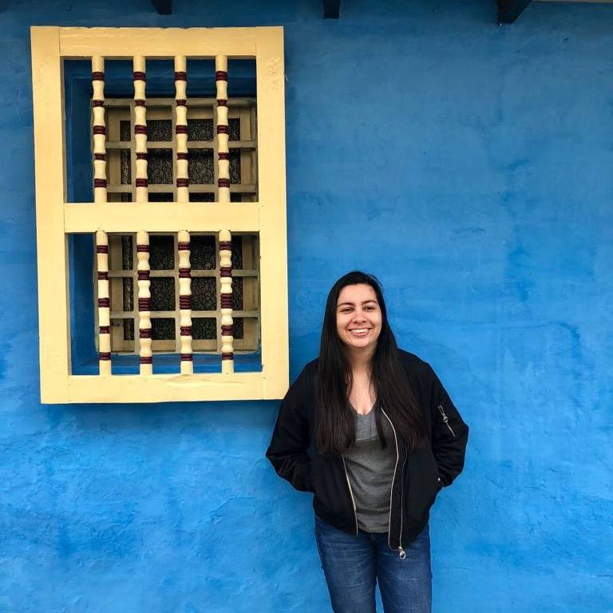

Español
About me👩🏻
I'm María Arévalo, a full stack developer and a passionate about software development. I'm from Arauca, Colombia. It's a little country town with warm weather on the border with Venezuela. Since I was little I wanted to dedicate my life to build tools that have impact in the world. It was until the end of my high school that I discovered the great power that IT has and how this would be the perfect way to make my mark. From a small program to carry expenses to a large application to coordinate various entities and help in decision-making. The possibilities are immense in this ever changing world!

Experience💻
Muevelo dashboard
The data that was gathered with the "Muévelo App" was stored in a NoSQL DB. I implemented an ETL to process the data, according to the requirements, and load it into a PostgreSQL DB. Finally, I developed a web application built with Flash and Dash to visualize and interact with the data.

Múevelo App
Developed an android application to track location of participants from the TrUST study for the Faculty of Medicine. The app was build with Kotlin and was connected to Firebase to store its data in a NoSQL database. It had an special focus on compatibility in a wide range of devices as well as battery optimization.
Acsendo
As an IT intern, I was in charge of tracking reports on team development and timing. I was also in charge of keeping an eye on task distribution and bug fixes. In addition, I made tests and small adjustments to a product under development built with Angular 2 and Java. All this using the SCRUM methodology.